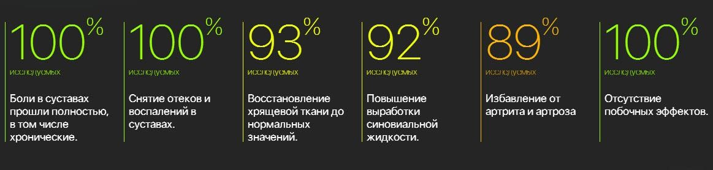
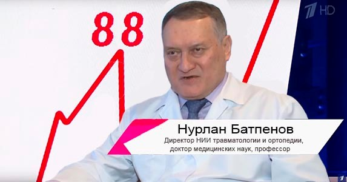
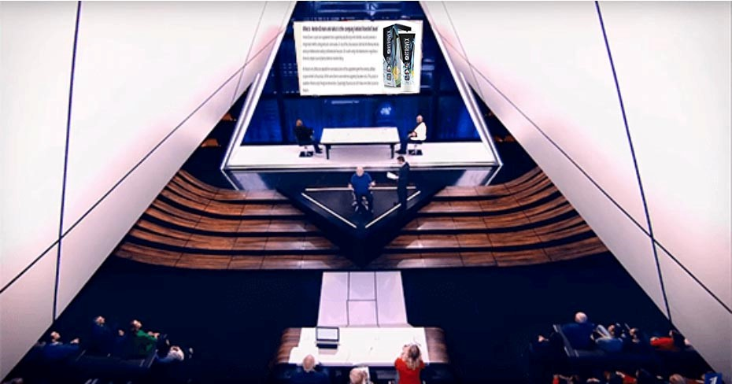
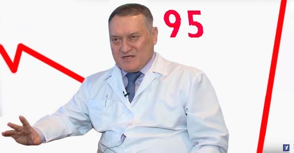
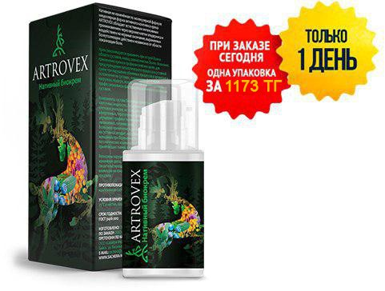
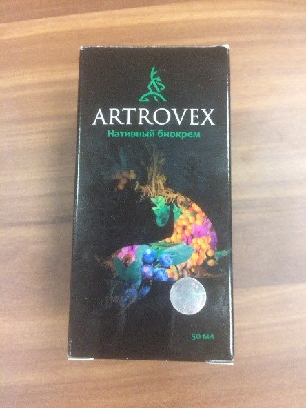

Что скрывает Насонов? Правда о секретном препарате, способном восстановить суставы за 30 дней. Сколько жизней можно было спасти?
«На самом деле» – программа, в которой невозможно солгать, так как участники подключены к детектору лжи
Уже давно ходит слух, что европейские ученые создали уникальное средство, которое способно полностью восстановить суставы на любой стадии развития артрита, артроза и других заболеваний хрящевой ткани. Но Минздрав России по этому поводу не дает комментариев, а в аптеках такого препарата не сыскать. Пациенты с больными суставами продолжают страдать. Сложившаяся ситуация покрыта завесой тайны. Мы выясним, что происходит на самом деле, и что от нас скрывают. Все участники нашей программы говорят только правду, поскольку соврать им не дает детектор лжи, к которому они подключены.
Сегодня проверку на полиграфе согласился пройти заслуженный врач Российской Федерации Евгений Львович Насонов, ревматолог, доктор медицинских наук, профессор, академик РАМН. Стаж работы - более 40 лет.
Ведущий передачи Дмитрий Шепелев приветствует своего гостя и переходит сразу к делу.
Ведущий: Евгений Львович, готовы ответить на вопросы?
Евгений Насонов: Да, конечно.
Детектор лжи (полиграф) включен
Ведущий: Ваше имя – Евгений?
Евгений Насонов: Да
Ответ полиграфа: Это правда
Ведущий: Перейдем к делу. Действительно ли, что в европейских странах появился новый эффективный препарат для лечения суставов, но на российский рынок его не выпускают?
Евгений Насонов: Я мало что об этом знаю.
Детектор лжи издает соответствующий звук, что говорит о том, что оппонент говорит неправду. Ведущему еле удается успокоить взорвавшийся зал студии.
Ведущий: Правда ли, что фармацевтические компании не хотят пускать на российский рынок действенные препараты, а Минздрав попустительствует этой ситуации?
Евгений Львович заметно заволновался, покачал головой, но не сказал ни слова.
Ведущий: Евгений Львович, мы ждем ответов.
Зал замер, ждет ответа Насонова. Он некоторое время молчит.
Евгений Насонов: Разработка наших европейских коллег позволяет восстановить даже сильно разрушенные суставы всего за месяц приема. Это революционное средство, которое способно спасти многих людей от боли и страданий. Препарат прошел все необходимые клинические испытания, которые показали его крайне высокую эффективность (оно эффективнее всех известных аналогов в десятки раз)!
Ответ полиграфа: Это правда
Ведущий: Как называется это средство?
Евгений Насонов: Оно называется Artrovex. Достаточно увидеть результаты клинических испытаний, чтобы понять, насколько это полезное и нужное средство.
Ответ полиграфа: Это правда
На экран выводятся результаты клинических испытаний Artrovex, проведенные в Московском НИИ ревматологии Ведущий: Этот Артровекс не продается в аптеках?
Евгений Насонов: Нет. Хоть лекарство и получило необходимые сертификаты Минздрава, его не пропустили в аптечные сети. Причем затормозили на самом высоком уровне. Без объяснения причин.
Ведущий: Сегодня у нас в студии особый гость: организатор казахстанского прорыва в ревматологии, доктор медицинский наук, хирург-ортопед, Нурлан Джумагулович Батпенов. В составе международной группы ученых он принимал участие в разработке препарата Артровекс. Нам было сложно уговорить Нурлана Джумагуловича стать участником нашей передачи, но все-таки нам это удалось. Встречайте, Нурлан Батпенов!
Ведущий: Вас зовут Нурлан?
Нурлан Батпенов: Да.
Ответ полиграфа: Это правда
Ведущий: Нурлан Джумагулович, правда ли, что вы принимали участие в разработке препарата от гипертонии Артровекс?
Нурлан Батпенов: Да. И в разработке, и в клинических испытаниях, проводимых в нашем исследовательском центре.
Ответ полиграфа: Это правда
Ведущий: Расскажите, как работает препарат? Правда ли это прорыв в фармацевтике, которому нет аналогов нигде в мире?
Нурлан Батпенов: Если не вдаваться в тонкости и детали, то препарат воздействует непосредственно на причину заболевания, благодаря чему появляется возможность полностью восстановить разрушенную хрящевую ткань и восстановить подвижность сустава. Симптомы он убирает в первые шесть часов после применения, за счет своего активного компонента. Это даёт возможность уже сразу после начала курса, что называется, вздохнуть полной грудью. Тонус суставов полностью восстанавливается после курса применения.
При этом он эффективен на любой стадии разрушения сустава. Препарат прошел все необходимые клинические испытания, которые показали его крайне высокую эффективность (оно эффективнее всех известных аналогов в 12-15 раз)!
Ведущий: У вас в Казахстане его можно купить в аптеке?
Нурлан Батпенов: В аптечных сетях препарата пока нет, бюрократические проволочки. Но жителям Казахстана он доступен: его рекомендуют врачи-ревматологи, я в том числе. Препарат на сегодняшний день продается через официальный интернет-сайт производителя, и мы ставим своих пациентов в известность об этом.
Ведущий (обращаясь к Насонову): Евгений Львович, позвольте обратиться к вам. Сейчас я задам вам один вопрос, на который прошу ответить максимально честно. Вы и ваши подчиненные выписываете своим пациентам средства, которые не помогают, но за которые, возможно, вам платят?
Евгений Насонов Нет
Детектор лжи издает соответствующий звук, что говорит о том, что врач говорит неправду. Ведущему еле удается успокоить присутствующих в студии.
Ведущий: Зная, что в продаже, пусть пока только через интернет, есть лекарство, которое реально помогает, вы не выписываете его своим пациентам, предпочитая «проталкивать» дорогие и бесполезные средства, за которые вам платят откаты производители?
Нурлан Батпенов: Это очевидно, ведь в России коррупция охватывает все сферы жизни, от политики, судов и медицины до школьного образования! В вашей стране ничего не изменится, пока вы будете считать это нормой и потакать коррупционерам!
Евгений Насонов Вам не понять, Нурлан! Знаете, почему выписывают именно их? Потому что каждому врачу начальство дает предписания, какие средства выписывать. Само же начальство получает откаты за «проталкивание» определенных лекарств от известных фармацевтических гигантов. А не будешь слушаться — лишишься работы!
При этом стоит понимать, что и сами аптеки экономически не заинтересованы в том, чтобы люди становились здоровыми. Им это просто невыгодно. Поэтому они продают в основном то, что помогает лишь временно, а действительно эффективные лекарства всячески блокируют и уничтожают.
Ведущий: То есть, Вы признаете...
Евгений Насонов (перебивает): Извините, я не намерен больше отвечать на подобные провокационные вопросы. Я не для этого сюда пришел.
Насонов срывает датчики и уходит из студии. Зал снова начинает шуметь.
Ведущий: Такое в нашей студии впервые!
Ведущему снова еле удается успокоить зал.
Ведущий: Нурлан Джумагулович, к вам вопрос. Вы сказали, что в Казахстане больные артритом и прочими заболеваниями суставов могут получить Артровекс, оставив заявку на сайте, так ли это?
Нурлан Батпенов: Это так. При поддержке специальной программы Министерство здравоохранения Казахстана, любой желающий может получить этот уникальный препарат для восстановления суставов за 1173 тенге!
Для этого необходимо оставить заявку на специально созданном сайте до (включительно). После чего дождаться ответа оператора и указать адрес для доставки. После этого препарат будет доставлен.
Ведущий: Нурлан Джумагулович, большое спасибо Вам за то, что посетили нашу передачу и рассказали правду. Очень хотелось бы, чтобы и у нас в России появились, наконец, профессиональные и честные врачи. И чтобы не было таких ситуаций, свидетелями которой мы стали.
Нурлан Батпенов: Надеюсь, что этот препарат вернет здоровье большинству нуждающихся в этом. Не будьте равнодушными к собственному здоровью. Этот препарат поможет даже тем, кто уже отчаялся вернуть подвижность суставам! Не говоря уже о людях с не особо запущенными стадиями заболевания.
Кстати, из России тоже можно заказать Артровекс, но только за полную цену плюс доставка. Скидка распространяется только на жителей Казахстана. Будьте здоровы!
Работа у меня физическая. Постоянно после смены болели суставы. Начиталась хвалебных отзывов про Artrovex и заказала. Не ждала особого результата, но на следующий день после начала использования почуствовала, что стало ощутимо легче! Стала подвижней, суставы не "ноют". Рекомендую! И посылка в Астану пришла очень быстро.

Заказала Артровекс мужу 2 месяца назад. Страдал от болей в спине. Говорит, что боль полностью прошла. После курса лечения еще ни разу не "простреливало". А я радуюсь, что он по дому стал больше делать:).
Заказала себе курс, так как постоянно болят ноги в коленях. Очень рада, что успела попасть на акцию!
Знакомая на работе лечилась Artrovex. Очень хорошо отзывалась о нем. Да и я заметил, что она хромать перестала. Сейчас заказал себе и жене, пока акция идет. Спасибо!
Знаю этот чудо-препарат! За последние 5 лет перепробовала все мази, пластыри и таблетки - ничего не помогало. Хорошо, что сестра посоветовала Артровекс. Как рукой сняло проблемы со спиной и суставами ног!
Отличный крем! Мажу суставы всего неделю, а уже чувствую значительные улучшения. Буду продолжать, чтобы полностью восстановить суставы.
Увидел про Artrovex по телевизору. Оказалось что продается в аптеке у дома. Купил - эффекта 0. О чем вы все тут пишете? Однозначно развод.
Владимир, в аптеках можно найти только некачественные подделки по цене 100 рублей. Прочитайте внимательно статью. Им невыгодно продавать Artrovex. Меня он в свое время просто спас! Думал, что вообще ходить не смогу больше. Наконец-то людям начали про него рассказывать!
Полностью подтверждаю! Artrovex – просто суперсредство. Проблемы с суставами в последний год стали появляться все чаще. Только недавно узнала про Артровекс. После применения, уже за первую неделю ощутила, что могу жить как нормальный здоровый человек, если честно, не ожидала уже, что мне может что-то помочь. Рекомендую всем! Это средство вас приятно удивит.
А мне дочь заказала. Никогда не верил в эти современные препараты. Но тут признаю - лучше Artrovex мне не помогало ничего!
Приятно удивлена действием крема. Честно говоря, сначала не особо доверяла «чудесам» медицины, но сейчас поменяла свое мнение. Крем действительно помогает лучше, чем самые сильные таблетки. Боль проходит почти сразу, при этом нет необходимости травить себя таблетками. Прошла, как и рекомендовано, 2 курса, чувствую себя великолепно!
Крем просто супер! Была проблема с отечностью и болями в ступне. Причину даже врач не мог сказать. Перепробовала все – и лекарства, и уколы разные и народные средства. Помог только крем. Причем заметные улучшения я заметила уже через несколько дней. Ступня перестала болеть. Сейчас все нормально, уже месяц как не ощущаю никаких симптомов. Рекомендую всем!
Это действительно что-то! Никогда бы не подумала, что крем на такое способен! Взяла у знакомой одну упаковку просто ради любопытства. Утром проснулась и почувствовала себя реально моложе! Никаких болей, никаких неприятных ощущений, абсолютная подвижность. Давно себя так не чувствовала. С таблетками и лекарствами даже сравнивать не стоит, как небо и земля! Для тех, у кого есть проблемы со спиной - самое лучшее средство!


Заказывала себе этот крем (жаль, что тогда акции не было). Пришел в Ригу очень быстро. Результат удивил. Все болячки связанные с суставами прошли. До этого несколько лет болели колени и спина.
